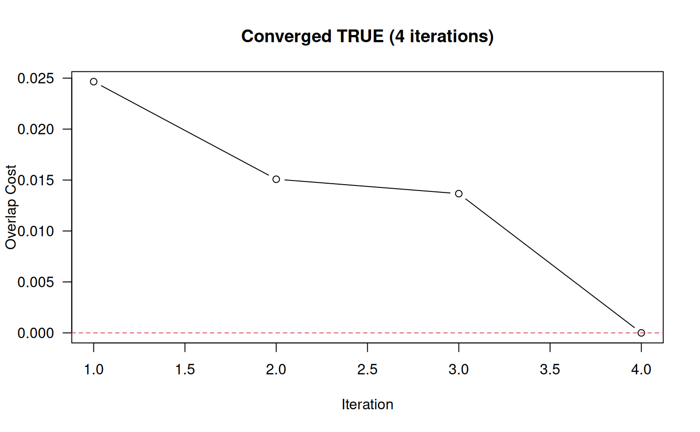

R/aqp-label-placement-solvers.R
electroStatics_1D.RdThis function attempts to move labels along a 1D coordinate system such that overlap (as specified by threshold) is minimized. An electrostatic simulation applies forces of repulsion between labels that are within thresh (e.g. overlapping) and forces of attraction to a uniformly spaced sequence to iteratively perturb affected labels until either no overlap is reported, or a maximum number of iterations (maxIter) has been reached.
electroStatics_1D(
x,
thresh,
q = 1,
chargeDecayRate = 0.01,
QkA_GrowthRate = 0.05,
maxIter = 100,
tiny = 1e-04,
const = 0.001,
trace = FALSE,
...
)numeric vector, pre-sorted sorted, without duplication, describing 1D label (particle) configuration
numeric, overlap threshold, same as in fixOverlap()
numeric, electrical charge (typically between 0.1 and 2)
numeric, exponential decay rate constant for q as a function of iteration i
numeric, growth rate constant for Qk applied to attraction to uniform spacing of labels, invoked when rank order is violated during the simulation
integer, maximum number of iterations before giving up
numeric, 0-values replaced by this number to avoid division by 0 and infinite forces
numeric, empirical constant added to the 1D electrostatic force equation to dampen oscillation: (Qk * Q1 * Q2) / (d^ex + const)
logical, include diagnostic output
not used, absorbs additional arguments to fixOverlap()
When trace = TRUE a list, otherwise numeric vector with converged attribute.
Difficult overlap problems can be addressed by reducing thresh and increasing q. Large values of q can lead to chaotic results.
This function will generate unpredictable output when x contains duplicate values.
This function requires input to be pre-sorted, although interesting "artistic" simulations will often result from unsorted x.
# vector of object locations, with potential overlap
x <- c(1, 2, 3, 3.3, 3.8, 5, 6, 7, 8, 9, 10)
# full diagnostic output
z <- electroStatics_1D(x, thresh = 0.65, trace = TRUE, q = 1)
#> 4 iterations
txt <- sprintf("Converged %s (%s iterations)", z$converged, length(z$cost))
plot(
seq_along(z$cost),
z$cost,
las = 1,
xlab = 'Iteration',
ylab = 'Overlap Cost',
type = 'b',
main = txt
)
abline(h = 0, lty = 2, col = 2)

# final configuration only
xnew <- electroStatics_1D(x, thresh = 0.65, q = 1)
#> 4 iterations
# check for convergence
attr(xnew, 'converged')
#> [1] TRUE
# compare original vs. modified
data.frame(orig = x, new = round(xnew, 2))
#> orig new
#> 1 1.0 1.00
#> 2 2.0 2.00
#> 3 3.0 2.66
#> 4 3.3 3.35
#> 5 3.8 4.01
#> 6 5.0 5.00
#> 7 6.0 6.00
#> 8 7.0 7.00
#> 9 8.0 8.00
#> 10 9.0 9.00
#> 11 10.0 10.00